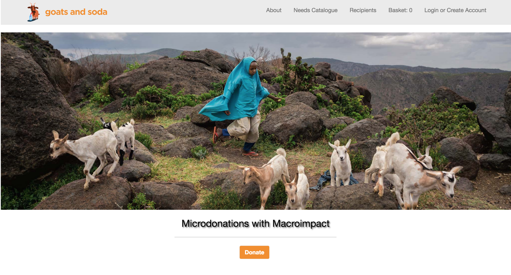

projectsShoot the Breeze Deployed || Repo
My group for this project created an app with React.js that uses a firebase server. Challenges included breaking the functionality into components and passing state and props appropriately.
We used lodash and moment libraries in our JavaScript and node webpack, and we tested with Enzyme and Chai. The design was done for us and we were tasked with matching the spec pixel to pixel and making the app responsive for mobile.
Trolly Poozleh Deployed || Repo
Trolly Poozleh is a concept our team of students created, based on the classic game whack-a- mole and our team member's collective love of puzzles. We created it to learn more about JavaScript and Node.js.
The object of the game is to clear all off the pictures of the puzzle in each level by clicking the green squares. I created the styling and design for the game and contributed to the back end functionality.
Stack: JavaScript, Node.js, jQuery, HTML, CSS
Dev Grove Deployed || Repo
The name Dev Grove is derived from the concept of keeping up on your github commits, "keeping your forest green". It is student project that explores consuming an external api. It serves as a developer dashboard. It uses Oauth through Github, jQuery with CSS for draggable functionality, a yoda syntax api, a weather api.
Nokogiri scrapes information from external HTML to bring in random insults or complements on a conditional based off of your daily Github commits. It utilizes a PostgreSQL database and is deployed on Heroku. The test suite is in Rspec.
Goats and Soda Deployed || Repo

This Rails application is a microdonation site our group created in the third quarter of the program. A user can create an account and donate available items to multiple recipients.
A donation recipient is an admin user for their own store, they can select predetermined needs from the catalog to request specific donations. A master admin user can edit information with recipients and donors. The code is pivoted off of a previous e-commerce site to practice working in existing code bases and multi-tenancy.
experienceContract Full Stack Developer Community Economics Lab 2016
Codevelop a concept RoR application for use in the public sector.
Reconfigure Rails MVC to maximize good UX.
Restructure database calls to allow for relational searches and filtering.
Build internal API to return JSON data for charting.
Integrate front end framework and design UI for application.
Evaluate and adapt the presentation of data to increase readability.
Stack: Ruby on Rails, MySQL, JavaScript, Sass
Floral Specialist
Whole Foods Market 2011-2015
Floral design and arrangement, visual merchandising, plant and flower care, processing and receiving. Management of the floral department sales, purchasing, inventory, and floral team members.
Owner/Designer
ZuSchaffen to create 2012-2013
Owner and principal of an Interior and Floral Design company in Chicago, Illinois. Served private clients in residential design projects, creating architectural drawings, space planning, sourcing products, and private floral event design concepts, planning, and implementation.
Design Assistant
Laura Soskin Design 2010-2012
Design and implement an efficient billing, filing, and communication system to increase productivity and ease of operations. Consultant on design projects. Develop communication and customer service skills through extensive interaction with clients and vendors. Organize and record antique products for web-based client browser and hardcopy catalog. Produce working drawings and source products.
educationTuring School of Software & Design
Web Application Development 2016
I completed seven months of the Back End Engineering Program, with a six week supplemental of the second module of the Front End Program. This makes me uniquely equiped for tackling a range of tech stacks.
'Object-Oriented Programming with Ruby,
Web Applications with Ruby,
Professional Rails Applications,
Client-Side Development with JavaScript,
React and Sass,
Responsive Design and UX'
The Art Institute of Colorado
BA Interior Design 2010
My education in Interior Design has given me a foundation for understanding the elements and principles of all types of design. While I enjoy good interior design, it became clear that I was more skilled and interested in using the digital tools of the trade than working as a practicing designer. The design education, as well as professional experience working with clients, acting as a go between with lead designers and contracters, and the hands on business knowlege have helped color my career trajectory.
'A rigorous, all-encompassing Interior Design curriculum developed by industry and education innovators. Creating living and working spaces with color, light, and materials while incorporating building codes, accessibility, and sustainability.'
University of Colorado
BA Psychology 2007
While I never pursued a career directly related to my Psychology Degree, the study of behavior and cognition is something I have been able to apply. The program included statistics classes as well as psychological studies. I find my understanding of User Experience to be directly related to what I learned in this program.
'Among other things, psychologists study the most effective ways to deal with others and how humans can best adapt to change, stress and a variety of other situations that are a part of daily living. Major subfields within the discipline include human cognition, emotion, behavior, social interactions and mindbrain relationships.'
feelsabout me My Travel Blog
^^ This is a blog I started during my four month sabbatical in Southeast Asia. It’s easily one of the coolest things I’ve done and if you have the time, the blog is a pretty good view of who I am.
I’m a passionate programmer and a lover of life. I’ve been told I am a decent human being and not terrible to be around. Love laughing, travel, health food, and animals. I’m determined to live like I mean it.
contactgithublinkedinemail